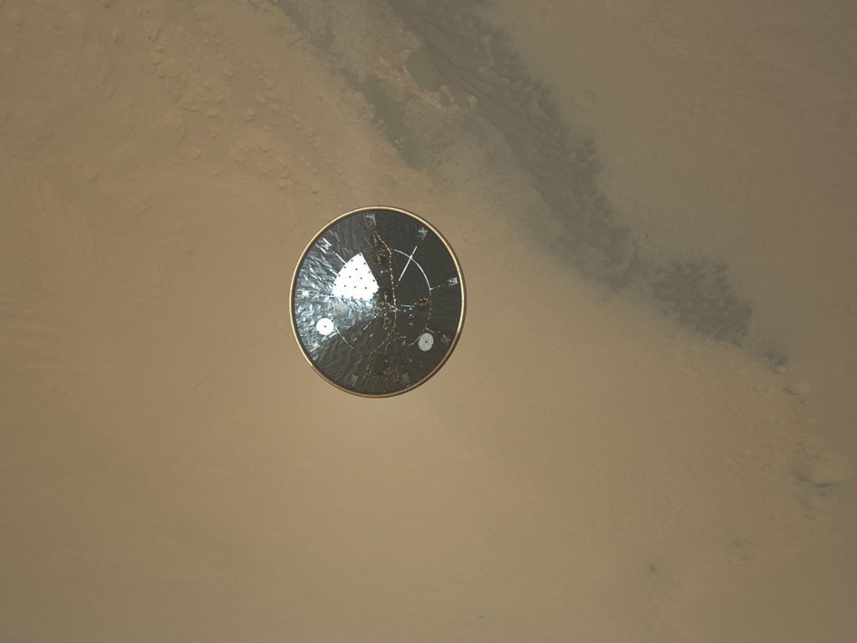
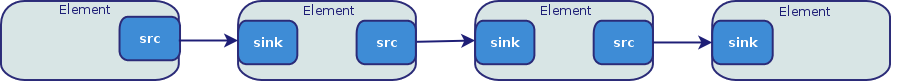
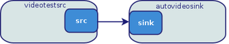
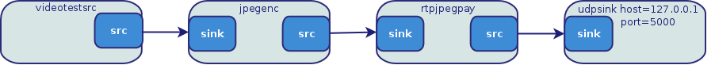
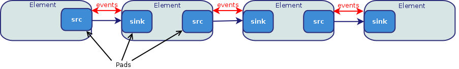
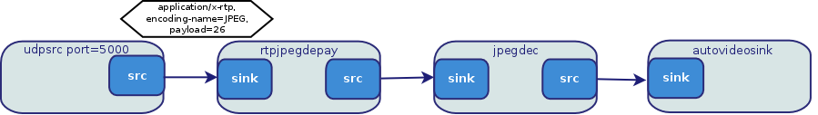
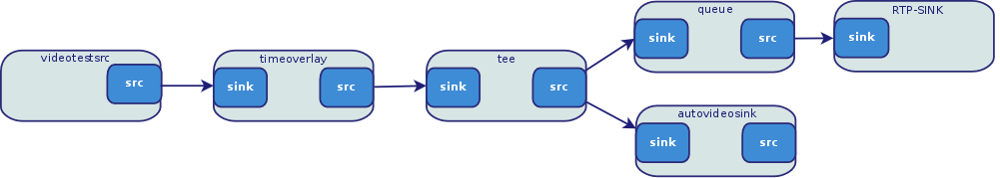

Videostreaming with Gstreamer
Arnaud Loonstra
05 July 2014
Abstract
In this document, we explore videostreaming technologies using the Gstreamer framework. Since videostreaming is becoming a commodity it is available for anybody to utilize. However videostreaming technology can be challenging as it can be highly complex. In this document we will introduce the elements needed for videostreaming on a network. We will focus our efforts onto setting up live videostreaming between two hosts.
Purpose, Context and History
Videostreaming is available in every consumer mobile phone and every home computer. It is used for teleconferencing, live broadcasting, on-demand television, remote gaming, wireless videoprojection, surveillance cameras, remote drone control, etcetera. The first streaming systems stem from 1920 but only since the late ’90s video streaming has become a commodity as technology progressed and standards emerged.
There are many out-of-the-box videostreaming software packages available. (e.g. VLC, Ustream, Justin.tv) These can be very easy to operate and might suit your purpose perfectly. However it is when you run into the limits of these packages that you need to understand what is going on behind the scenes. The purpose of this document is to introduce you to the technology behind the scenes using the Gstreamer framework.
Operating Principles
Streaming technology usually refers to sending large streams of data between systems. Because the data is too big to send in one go it is cut in to smaller packets of data. These packets are then send sequentially. In order to decrease the size of the data it is often compressed.
The operating principle of videostreaming is the same. Basically a video is compressed and then send in packets through a transport.
There are two methods of compressing video data. The first is ‘Inter-Frame’ based compression. Think of this as saving every image in the video as a JPEG image. An example compression algorithm that works accordingly is Motion-JPEG. Other examples are DV and HuffYUV. The second method is ‘Intra-Frame’ based compression and uses the the differences in images. If you start with an image the ‘Intra-Frame’ based method only tracks the differences in the following frames. Some highly sophisticated algorithms have been developed over the years of which the most used one is H.264. Other examples include Theora, Xvid and Divx. Compression algorithms for video are often referred to as a ‘codec’.
To transport the stream of of video data packets there are many possibilities. In TCP/IP networks an UDP transport is the most simple solution. The RTP protocol is a transport protocol on top of UDP. Nowadays HTTP is also often used as a transport for streaming video.
Strengths and Weaknesses
With digital video technologies many parameters are involved which have a broad range of consequences. We could dive into the discussion of whether IP networks are designed for streaming technologies however we rather focus on the implications of the codecs and the transports on top of IP networks as that’s the practical situation we will be exposed to. In this document we will be exploring the Motion-JPEG and H.264 codec on top of RTP transports.
To transport the videostream we already introduced UDP. As UDP does not guarantee delivery nor order it’s only suitable for situations where speed and minimal bandwidth are a top requirement. However usually you do want the right order of packets if the packets do make it across. The RTP protocol provides this on top of UDP. Therefore the RTP protocol is better suited for transporting videostreams. The HTTP protocol was never designed to do streaming. However as a lot of firewalls block everything except HTTP, HTTP is nowadays used for everything thus including videostreaming.
When it comes to compressing video the Motion-JPEG compression is a common ‘Inter-Frame’ compression method which simply consists of compressing to JPEG images. This is very suitable for situations where you need fast encoding and decoding. As it’s based on single frames Motion-JPEG is also very suitable to seek through the video.
Seeking through a video is much more difficult when the compression is ‘Intra-Frame’ based. This method uses the changes in sequential frames. Before finding a frame at a certain position in the video the seek method first needs to find a full frame (keyframe) and from there calculate the differences to the position. The H.264 is a codec based on the differences in frames and therefore less suited for situations where you do a lot of seeking in the videostream. However when it comes to bandwidth the H.264 codec is the clear winner compared to Motion-JPEG. We’ll see the differences in bandwidth further on. The H.264 codec was designed for streaming. It provides many parameters to tweak the compression to specific needs. There are too many parameters to manage H.264 but luckily most encoders provide presets. We’ll be using these presets to do our encoding.
Typicial Applications
The band “Severe Tire Damage” performed at Xerox Parc in 1993 while being streamed through the internet. This is one of the first mentioned internet videostreaming events. Videostreaming is used in many domains nowadays of which television is the first that comes to mind. But other examples include streaming your videos on your mobile to your television or your presentation to the video projector. Nowadays a lot of research is done is for remote gaming. The computer you play on is located somewhere in a datacentre while you play it at home on your television. For these applications the latency if of utmost importance.
The basic application of videostreaming is sending any picture to one or more receivers.
Surprising Applications

Still from the descent of Curiosity Rover. Image credit: NASA/JPL-Caltech/MSSS
The landing of NASA’s Curiosity Rover was broadcasted live from Mars. The latency of the videostream was about 14 minutes because of the distance. For the scientists involved this was called the “7 Minutes of Terror” as getting from the top of the atmosphere to the surface of Mars was about 7 minutes. So any first signal from Curiosity descent would mean it could be already dead for 7 minutes.
Getting Started
To use the Gstreamer framework it’s easiest to install it on a Linux system. In this example we are using Ubuntu but the steps should be similar on other platforms. To make sure the framework is installed run the following command in the terminal:
sudo apt-get install gstreamer1.0-tools \ gstreamer1.0-plugins-base \ gstreamer1.0-plugins-good \ gstreamer1.0-plugins-bad \ gstreamer1.0-plugins-ugly
To have a basic understanding of the Gstreamer framework you need to think of it as a pipeline. The video data starts at the source and moves to the sink. Meanwhile you can do many things with the videodata. Each chain in the pipeline is called an element.

To construct a pipeline we have a very simple command line tool called ‘gst-launch’. The most simple pipeline would be a simple test video display which consists of the following elements:
- videotestsrc: A simple element creating a test image
- autovideosink: A display element which needs no configuring

To create this pipeline run the following command:
gst-launch-1.0 videotestsrc ! autovideosink
The ‘gst-launch-1.0’ command uses the exclamation mark (!) to link elements to each in order to create a pipeline.
In our videostreaming setup between two hosts we already know what we need our pipeline to do. On the sending side we need to:
- acquire the video data
- compress the video data
- cut the data into smaller packets
- send the packets out through a network transport
On the receiving side we than want to:
- receive the packets from the network transport
- reassemble the packets into video data
- decompress the video data
- display the video
To construct this pipeline you first need to find the elements that can do this. In general it is best to lookup the gstreamer plugin documentation to find the elements you need. In the case of a Motion-JPEG streaming setup using RTP we need the following elements:
- ’videotestsrc’ & ‘autovideosink’ to genereate and display an image
- ’jpegenc’ & ‘jpegdec’ to encode to and decode from JPEG
- ’rtpjpegpay’ & ‘rtpjpegdepay’ to create the RTP packets
- ’udpsrc’ & ‘udpsink’ to transport the RTP packets using UDP
Run the following two commands for the sender and the receiever:
Sender:
gst-launch-1.0 videotestsrc ! \ jpegenc ! \ rtpjpegpay ! \ udpsink host=127.0.0.1 port=5200

Receiver:
gst-launch-1.0 udpsrc port=5200 ! \ rtpjpegdepay ! \ jpegdec ! \ autovideosink
You’ll notice that the receiver will quit immediately with an error. This is because we need to tell the ‘rtpjpegdepay’ element some information about the data it will receive. This is called a ‘capsfilter’ in Gstreamer terms. A capsfilter is placed between the ‘pads’ of connecting elements. In Gstreamer events can transfer up and down the pipeline. These events can be used to pause the pipeline for example but it can also be used for exchanging the capabilities.

This might look a bit puzzling but just think of it as setting some required parameters the elements in the pipeline need in order to connect to each other:
gst-launch-1.0 udpsrc port=5200 ! \ application/x-rtp,\ encoding-name=JPEG,payload=26 ! \ rtpjpegdepay ! \ jpegdec ! \ autovideosink
Now that we have an example stream working we can replace the ‘videotestsrc’ with a webcam. On a Linux system we can use the ‘v4l2src’. We will need a capsfilter to set the webcam’s resolution.

gst-launch-1.0 v4l2src ! video/x-raw,width=640,height=480 ! \ jpegenc ! \ rtpjpegpay ! \ udpsink host=127.0.0.1 port=5200
This gives us a nice feedback on the latency involved in this stream. The bandwidth used is about 1800 kbit/s. If we now try a default h.264 encoder you will notice difference.
Sender:
gst-launch-1.0 v4l2src ! \ video/x-raw,width=640,height=480 ! \ x264enc ! h264parse ! rtph264pay ! \ udpsink host=127.0.0.1 port=5000
Receiver:
gst-launch-1.0 udpsrc port=5000 ! \ application/x-rtp,\ encoding-name=H264,payload=96 ! \ rtph264depay ! h264parse ! avdec_h264 ! \ autovideosink
First, it might take very long for the image to show. This is because the stream first needs to receive a full keyframe. Second, your computer might not be able to cope with the encoding and decoding. Third, the latency is much higher (+5s) compared to the Motion-JPEG pipeline. On the other hand the bandwidth is much lower. About 300 kbit/s. We can tweak the parameters of the x264 encoder (sender) to make it more suitable for live streaming. You can find out which parameters you can set using the ‘gst-inspect’ command. Just try the following ‘gst-inspect’ command and match the output with the next ‘gst-launch’ example. Running ‘gst-inspect’ with no arguments will list all available elements.
gst-inspect-1.0 x264enc
gst-launch-1.0 v4l2src ! \ video/x-raw,width=640,height=480 ! \ x264enc tune=zerolatency byte-stream=true \ bitrate=3000 threads=2 ! \ h264parse config-interval=1 ! \ rtph264pay ! udpsink host=127.0.0.1 port=5000
The bandwidth remains about the same (350 kbit/s) but the latency is much improved as well as the burden on the machine running it.
To conclude these example pipelines we still need to know the latencies involved in the pipelines. I will provide a recipe to explore yourself as you now should be able to find out what all these elements do. Basically the recipe constructs a videostreaming setup which is displaying the image with a timestamp on the source computer as well as on a remote system. The difference in the timestamp corresponds with your latency of the pipeline.

Sender:
gst-launch-1.0 v4l2src ! \ video/x-raw,width=640,height=480 ! \ timeoverlay ! \ tee name="local" ! \ queue ! \ autovideosink local. ! \ queue ! jpegenc! rtpjpegpay ! \ udpsink host=127.0.0.1 port= 5000
Receiver:
gst-launch-1.0 udpsrc port=5000 ! \ application/x-rtp,\ encoding-name=JPEG,payload=26 ! \ rtpjpegdepay ! jpegdec ! autovideosink
Final Thoughts
This document introduced you into the technologies involved in video streaming across networks. The Gstreamer framework was introduced and you should now be confident to experiment with different pipeline setups.
Not everything was explained as video streaming technologies is an engaging subject. As this paper only covered videostreaming no audio was involved. However in many videostreaming situations you do want audio. Therefore you need to understand that in those cases a data stream needs to contain both video and audio. The process of combining and splitting the audio and video data is called ‘multiplexing’. The elements doing this process are called a ‘muxer’ and a ‘demuxer’.
If you want to use the Gstreamer Framework in your own program I urge you to read the official Gstreamer tutorials. The process is exactly the same as explained in this document but provides many more options. As long as you understand the basic principles and commands introduced in this document you should be able to code any pipeline.
References
- Overview of all Gstreamer plugins, http://gstreamer.freedesktop.org/documentation/plugins.html, Retrieved 2014-06-04
- Gstreamer Application Development Manual, http://gstreamer.freedesktop.org/data/doc/gstreamer/head/manual/html/index.html, Retrieved 2014-06-04